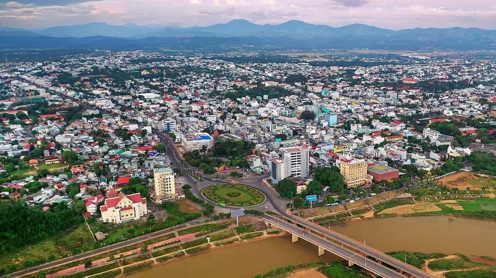

Kon Tum
Kon Tum là một tỉnh thuộc vùng Tây Nguyên, nổi tiếng với cảnh quan hùng vĩ, thiên nhiên nguyên sơ và nền văn hóa đậm bản sắc của các dân tộc thiểu số. Đây là điểm đến lý tưởng cho những ai yêu thích khám phá núi rừng và trải nghiệm văn hóa bản địa.
Với những con đường quanh co qua rừng thông, các nhà rông truyền thống, dòng sông Đăk Bla xanh biếc cùng khí hậu mát mẻ, Kon Tum là điểm đến còn rất nguyên sơ và hấp dẫn.
Bối cảnh lịch sử
Kon Tum từng là nơi sinh sống lâu đời của các dân tộc bản địa như Ba Na, Xơ Đăng, Giẻ Triêng. Trong thời kỳ kháng chiến chống Mỹ, Kon Tum có vị trí chiến lược quan trọng trong tuyến đường Trường Sơn, từng diễn ra nhiều trận đánh ác liệt, tiêu biểu là Chiến dịch Đăk Tô – Tân Cảnh.
Đặc điểm nổi bật
- Nhà thờ gỗ Kon Tum – kiến trúc Roman độc đáo kết hợp Tây Nguyên
- Nhà Rông – biểu tượng văn hóa cộng đồng của người Ba Na
- Văn hóa cồng chiêng – di sản phi vật thể của nhân loại
- Sông Đăk Bla và cầu treo Kon Klor nổi bật giữa núi rừng
- Ẩm thực địa phương: cơm lam, gà nướng, rượu cần
Gợi ý lịch trình
Ngày 1: Tham quan Nhà thờ gỗ, Nhà Rông Kon Klor, cầu treo Kon Klor
Ngày 2: Khám phá làng văn hóa Kon K’tu, trải nghiệm cồng chiêng, thưởng thức đặc sản
Ngày 3: Đi dã ngoại Măng Đen – “Đà Lạt thứ hai” của Tây Nguyên